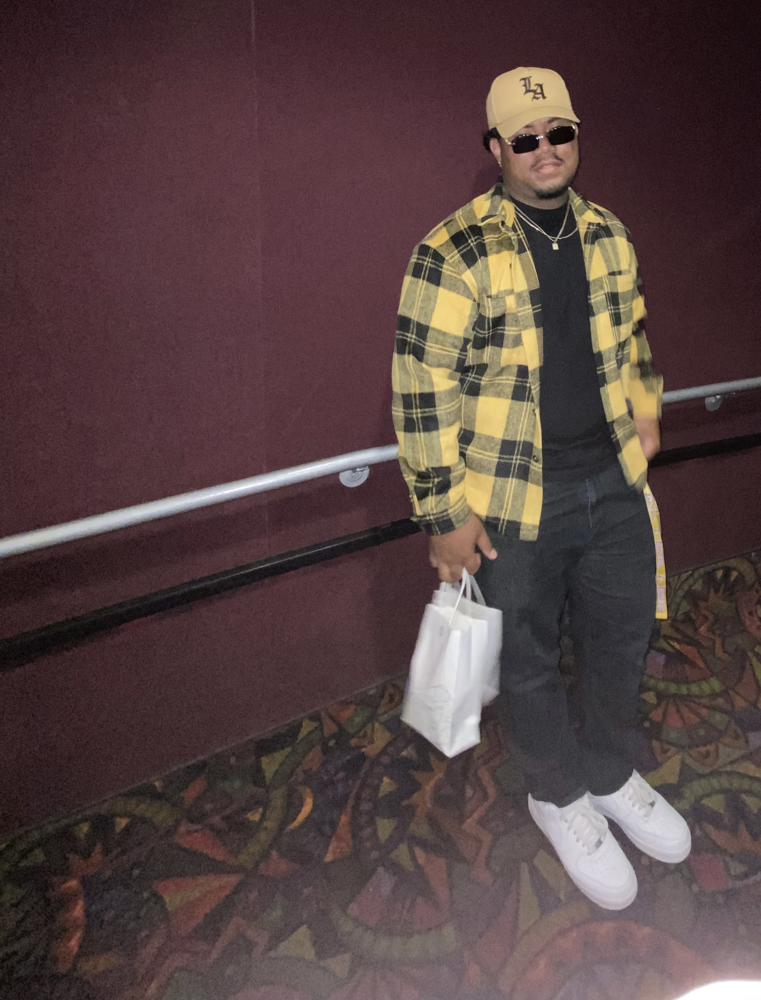

ABOUT
Teruah Tagaloa is a 20 year old barber from Long Beach, California. Ruah started out cutting hair in his church basement, giving out free haircuts to friends and family. Ruah's love for the craft began as a hobby, but has since grown into a passion. Adopting RuskiBlendz as his barber name, Ruah commits to being of service to others through his abilities as a barber.